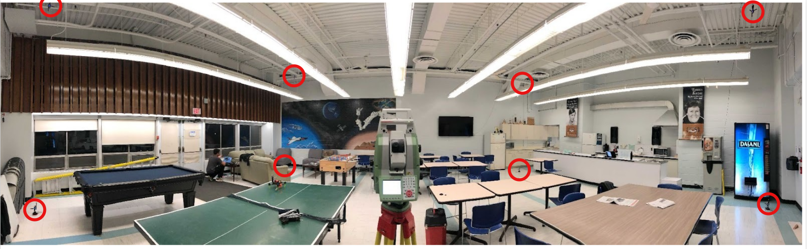

UTIAS_cafe_16122022
Description
This dataset was collected at the UTIAS cafeteria. A panoramic view of the cafeteria is shown below. The dimensions of the cafeteria are 10m × 10m × 5m with 8 UWB anchors installed on the ceiling and on the floor. This is a challenging setup for UWB-based localization as most of the anchors are occluded by metallic and non-metallic objects that induce serve NLOS scenarios. The location of the anchors is highlighted by red circles.

The test platform is a custom-built 220mm size quadrotor with a single UWB tag, an Intel Realsense T261 tracking camera, and a Jetson TX1 computer. For each trial, the MAV is commanded along minimum-jerk trajectories. Ground truth position is obtained by tracking the Lieca prism on the MAV using a total station. The position offset of the Leica prism with respect to the body center is provided in the config file. All the sensor data was recorded on the onboard computer in each case.
In some experiments, ground truth position may not be available for the entire trajectory as the Total station loses track of the Leica prism in these experiments.

Experiments
Videos of the experiments involving four different paths are shown in the collage below.

Comments
- In this dataset, only ground truth position is available. The ground truth position is obtained from a Leica Total station tracking the prism on the MAV. The frequency of the ground truth data is 5Hz. The position offset of the prism in the body frame can be found in the config file.
- The T261 tracking camera is mounted such that it makes a 20 degree pitch angle with respect to the body-frame. However, the VIO data has been modified to be gravity aligned. In other words, the VIO data has been rotated to align with the body frame.
- Range measurements from UWB radios are susceptible to systematic and spatial-varying biases (Zhao et al., 2021). It is recommended to either compensate for the systematic biases using a calibration procedure or estimate the spatial biases online to achieve good positioning accuracy.
- Spatial offsets of the UWB radio and the T261 camera with respect body frame can be found in the config file.
Data files
The dataset can be downloaded from here: UTIAS_cafe_16122022
References
This dataset has been used in:
- Goudar, A., Zhao, W., & Schoellig, A. P. (2023). Range-Visual-Inertial Sensor Fusion for Micro Aerial Vehicle Localization and Navigation. IEEE Robotics and Automation Letters, 1–8. https://doi.org/10.1109/LRA.2023.3335772.